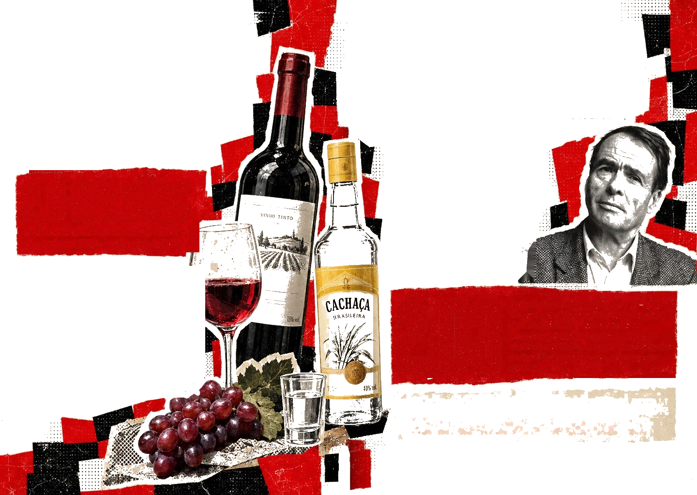
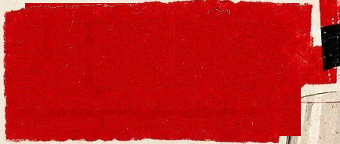
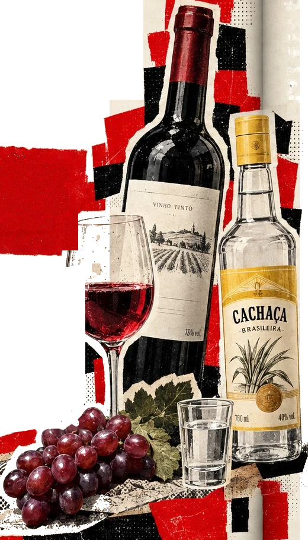
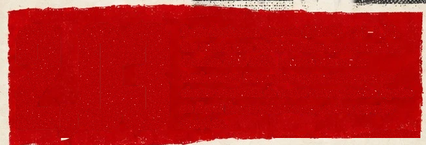

LEGALIDADE NÃO É ESCALA DE DANO
Álcool: uma substância socialmente
normalizada também produz danos.
2,6 MILHÕES
Mortes atribuíveis ao consumo de álcool
no mundo em 2019 — estimativa da OMS.
O ESTUDO QUE PROVOCOU O DEBATE
Em uma análise britânica de 2010, Nutt, King e Phillips
compararam 20 drogas por 16 critérios de dano ao usuário
e a outras pessoas:
Os resultados são escores ponderados, não porcentagens
nem riscos individuais universais.
APRECIADOR OU CACHACEIRO?
A molécula do álcool é a mesma. O julgamento social nem sempre.
Uma taça de vinho em um restaurante pode comunicar prestígio.
Uma bebida barata consumida em espaço público pode ser motivo
para desqualificar a pessoa. Não estamos dizendo que padrões e
quantidades de consumo sejam idênticos: discutimos como ambiente,
linguagem e posição social afetam os julgamentos.
BOURDIEU: O GOSTOTAMBÉM CLASSIFICA
Gostos, rituais e vocabulários podem
funcionar como marcas de distinção
social. O problema aparece quando
uma diferença entre práticas vira
suposta inferioridade de quem as
pratica.
2,03
Razão de chances ajustada (IC95%: 1,73–2,37).
Em estudo com 34.980 adultos que consumiam
álcool na PNS 2019, pessoas com ensino
fundamental incompleto apresentaram maior
chance estatística de certas consequências ligadas
ao álcool do que pessoas com ensino superior
completo.
Ter recursos não impede o sofrimento.Muda as condições de enfrentá-lo.